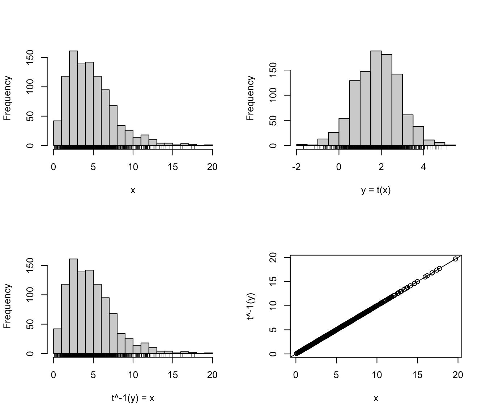
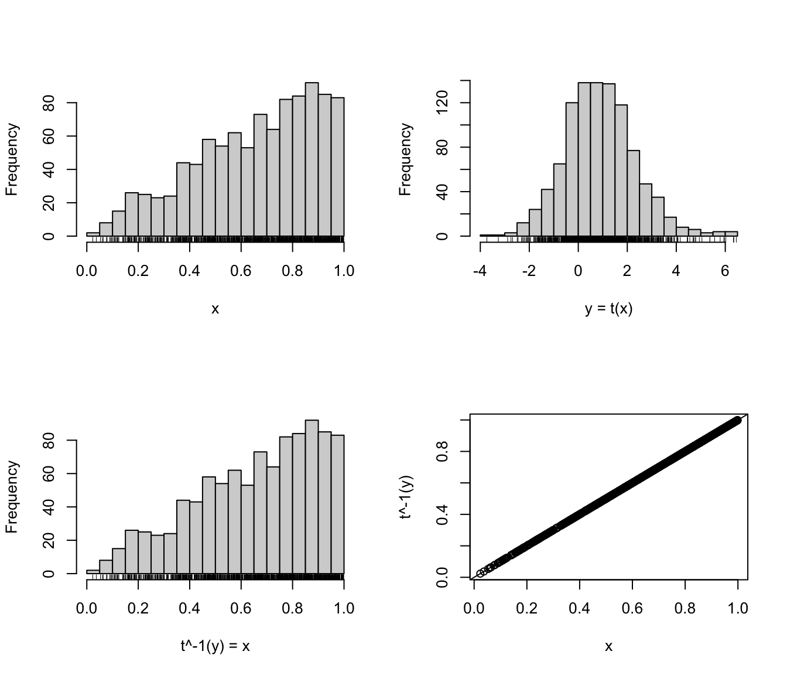

Range–power transformation
rangepowerTransform.RdFunctions to compute univariate range–power transformation and its back-transform.
Usage
rangepowerTransform(x, lbound = NULL, ubound = NULL, lambda = 1)
rangepowerBackTransform(y, lbound = NULL, ubound = NULL, lambda = 1)Details
The range-power transformation can be applied to variables with bounded support.
Lower bound case
Suppose \(x\) is a univariate random variable with lower bounded support
\(\mathcal{S}_{\mathcal{X}} \equiv (l,\infty)\), where \(l > -\infty\).
Consider a preliminary range transformation defined as \(x \mapsto
(x - l)\), which maps \(\mathcal{S}_{\mathcal{X}} \to \mathbb{R}^{+}\).
The range-power transformation is a continuous monotonic transformation
defined as
$$ t(x; \lambda) =
\begin{cases} \dfrac{(x-l)^{\lambda} - 1}{\lambda} &
\quad\text{if}\; \lambda \ne 0 \\[1ex] \log(x-l) &
\quad\text{if}\; \lambda = 0
\end{cases} $$
with back-transformation function
$$ t^{-1}(y; \lambda) =
\begin{cases} (\lambda y + 1)^{1/\lambda} + l &
\quad\text{if}\; \lambda \ne 0 \\[1ex] \exp(y)+l &
\quad\text{if}\; \lambda = 0
\end{cases} $$
Lower and upper bound case
Suppose \(x\) is a univariate random variable with bounded support
\(\mathcal{S}_{\mathcal{X}} \equiv (l,u)\), where \(-\infty < l < u <
+\infty\). Consider a preliminary range transformation defined as
\(x \mapsto (x - l)/(u - x)\), which maps \(\mathcal{S}_{\mathcal{X}}
\to \mathbb{R}^{+}\).
In this case, the range-power transformation is a continuous monotonic
transformation defined as
$$ t(x; \lambda) =
\begin{cases}
\dfrac{ \left( \dfrac{x-l}{u-x} \right)^{\lambda} - 1}{\lambda} &
\quad\text{if}\; \lambda \ne 0 \\[2ex]
\log \left( \dfrac{x-l}{u-x} \right) &
\quad\text{if}\; \lambda = 0,
\end{cases} $$ with back-transformation function
$$ t^{-1}(y; \lambda) =
\begin{cases}
\dfrac{l + u (\lambda y + 1)^{1/\lambda}}{1+(\lambda y + 1)^{1/\lambda}} &
\quad\text{if}\; \lambda \ne 0 \\[1ex] \dfrac{l + u \exp(y)}{1+\exp(y)} &
\quad\text{if}\; \lambda = 0
\end{cases} $$
References
Scrucca L. (2019) A transformation-based approach to Gaussian mixture density estimation for bounded data. Biometrical Journal, 61:4, 873–888. doi:10.1002/bimj.201800174
Examples
# Lower bound case
x = rchisq(1000, 5)
y = rangepowerTransform(x, lbound = 0, lambda = 1/3)
par(mfrow=c(2,2))
hist(x, main = NULL, breaks = 21); rug(x)
hist(y, xlab = "y = t(x)", main = NULL, breaks = 21); rug(y)
xx = rangepowerBackTransform(y, lbound = 0, lambda = 1/3)
hist(xx, xlab = "t^-1(y) = x", main = NULL, breaks = 21); rug(xx)
plot(x, xx, ylab = "t^-1(y)"); abline(0,1)

# Lower and upper bound case
x = rbeta(1000, 2, 1)
y = rangepowerTransform(x, lbound = 0, ubound = 1, lambda = 0)
par(mfrow=c(2,2))
hist(x, main = NULL, breaks = 21); rug(x)
hist(y, xlab = "y = t(x)", main = NULL, breaks = 21); rug(y)
xx = rangepowerBackTransform(y, lbound = 0, ubound = 1, lambda = 0)
hist(xx, xlab = "t^-1(y) = x", main = NULL, breaks = 21); rug(xx)
plot(x, xx, ylab = "t^-1(y)"); abline(0,1)
